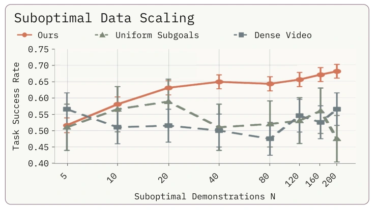
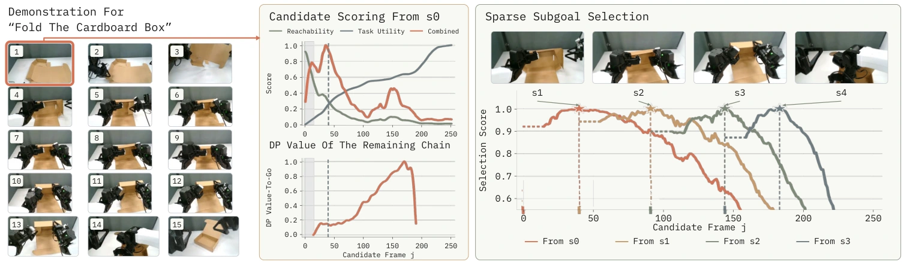
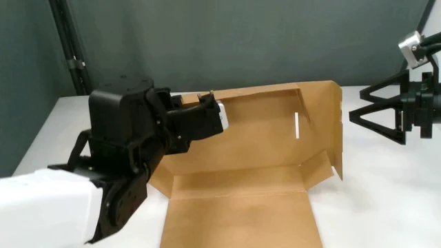
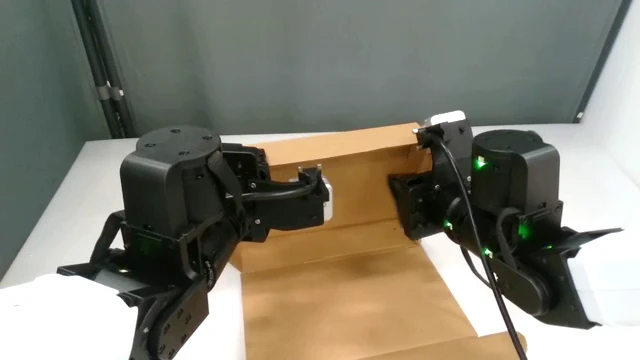
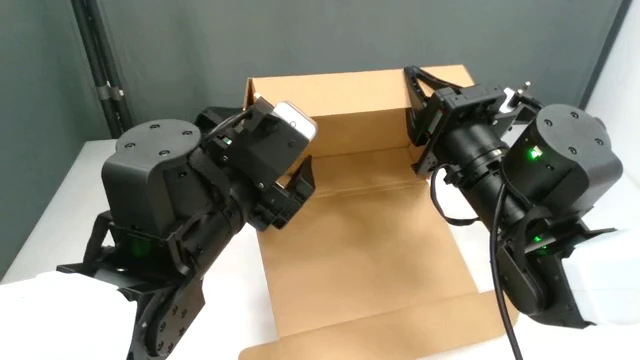
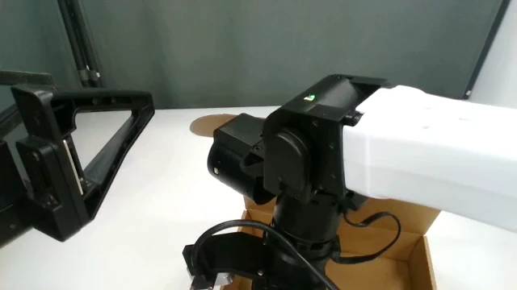
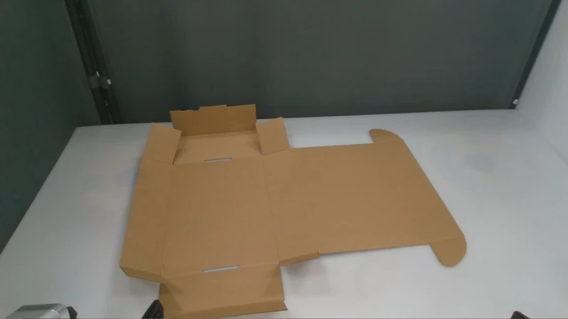
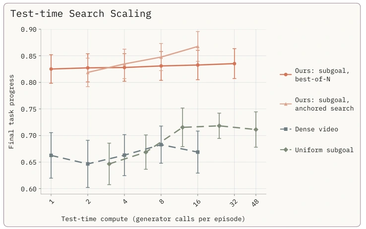
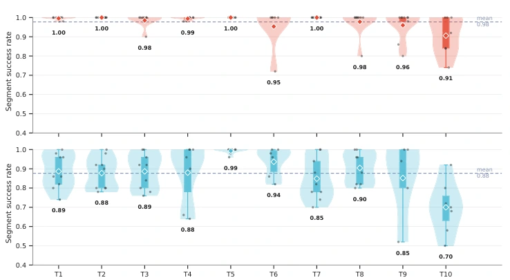

Learning from imperfect videos
Suboptimal data can still
teach useful plans.
On Robomimic-MH Square, adding suboptimal videos improves the sparse planner while the low-level policy remains fixed.

01 — Motivation
Video models can imagine plausible futures. But a convincing video does not always make an executable plan.
DreamCan bridges this gap with sparse visual subgoals. It discovers intermediate states that move the task forward and remain within the robot’s reach, then trains a video model to imagine these states from an image and a language instruction.
A goal-conditioned policy turns the imagined subgoals into actions, with replanning from new observations.
Can the robot get from here to there?
Does this state bring the task closer to completion?
LIBERO-Long success
Low-level policy parameters
Real-world manipulation tasks
Video supervision for subgoal discovery
Video models provide rich priors for generalizable robotic manipulation, but plausible visual futures are not always executable. We introduce DreamCan, a hierarchical policy that grounds video models through sparse visual planning: a high-level planner adapted from a pre-trained video model and a low-level visuomotor policy. Rather than predicting dense trajectories, the high-level planner generates sparse visual subgoals that balance reachability and task utility. From offline, action-free robot videos, we estimate these quantities and use dynamic programming to select subgoal sequences without manual annotations. The resulting subgoals are more reliably attained than uniformly spaced alternatives, and the full system outperforms language, dense-video, and uniform-subgoal planners, reaching high planning success rates on Language-Table tasks and 91.2% success on LIBERO-Long with a 0.1B-parameter low-level policy. Additional suboptimal videos and test-time compute further improve success. The system also performs challenging real-world bimanual tasks, including box folding and packing with unseen object combinations.
02 — Method
From action-free robot videos to a sparse visual planner, in four stages.
Frozen RADIO features encode the current observation and a candidate goal. A temporal Transformer combines observation history, goal features, and language to predict the reachability value.
Action-free goal-conditioned expectile learning uses a reward of −1 before reaching the goal and 0 at termination. The normalized score reflects how quickly and reliably the goal can be attained.
Higher values indicate easier transitions. The score is not a fixed-horizon success probability.
We adapt the pretrained RoboMeter progress model with LoRA. For tasks with explicit spatial requirements, VLM outputs and SAM object masks provide additional progress estimates.
For successful demonstrations, raw scores are smoothed, normalized using start and completion anchors, and converted to a running maximum. The annotation score records the best task progress so far.
Dynamic programming selects the whole subgoal sequence jointly. Transition costs penalize low reachability, terminal utility rewards task progress, and a spacing prior regularizes the temporal gaps.

We fine-tune Wan 2.2 TI2V-5B with LoRA while freezing the VAE and text encoder. Each subgoal image is repeated four times before the causal 3D VAE, preserving a separate latent slot for each subgoal.





Training conditions on observations sampled throughout each trajectory. Random clean-prefix conditioning teaches the planner to retain selected subgoals and regenerate the remaining sequence during test-time search.
The planner communicates with the low-level policy through generated subgoal images.
03 — Experiment results
Generated visual plans on Language Table. Success requires goal attainment, object integrity, and valid transitions.
| Method | Make a line | All to region | Canonical shape |
|---|---|---|---|
| VLP | 56% | 78% | 15% |
| DreamCan Ours | 86% | 100% | 52% |
Generated-plan evaluation on 100 testing videos per task. Success requires goal attainment, object integrity, and valid transitions; these are not robot execution success rates. The canonical-shape VLP result was reproduced by the paper’s authors.
Qualitative comparison from presentation slide 18. Clips retain their original timing and may have different durations.
Train the visual planner on additional suboptimal demonstrations while holding the goal-conditioned low-level policy fixed.
Learning from imperfect videos
On Robomimic-MH Square, adding suboptimal videos improves the sparse planner while the low-level policy remains fixed.

Sample candidate plans, score their progress, retain a promising prefix, and regenerate the remaining subgoals. Language preferences can steer which prefix is selected.
Generated plan · 1 generator call · Presentation, slide 19

Language-guided steering
The base instruction stays the same: “Pack the bread, blue cube, and the bear into the box.” A VLM selects generated subgoal prefixes that satisfy additional spatial preferences.
A 0.1B flow-matching policy executes generated visual subgoals. The reported policy size excludes the pretrained video planner.
| Method | Push-T | LIBERO-Long |
|---|---|---|
| End-to-end policy | 58.0% | 79.2% |
| Language planning | 62.0% | 75.6% |
| Dense visual planning | 70.0% | 84.0% |
| Uniform subgoal planning | 72.0% | 82.4% |
| DreamCan Ours | 86.0% | 91.2% |
Selected planning baselines from Table III. The paper reports 50 evaluation episodes for our methods and provides separate comparisons with pretrained VLA and world-action models.
Execution and generated subgoal sequences are shown together in the source videos.
Checking the intermediate steps
Across ten LIBERO-Long tasks, DreamCan reaches a mean segment success rate of 0.98, compared with 0.88 for uniform subgoals, at a 5 cm threshold.

04 — Real-world results
Contact-rich box folding, packing with unseen object combinations, and language-directed block rearrangement on a dual-arm YAM robot.
Contact-rich manipulation
Transform a flat cardboard box into a usable container through a sequence of coordinated, contact-rich interactions.
Representative rollouts from the supplementary presentation. Aggregate success rates are reported in the paper, Table V.
| Method | Box folding | Packing (unseen) | Make a line |
|---|---|---|---|
| End-to-end policy | 5% | 0% | 10% |
| Dense video planning | 0% | 5% | 0% |
| Uniform subgoal planning | 10% | 20% | 25% |
| DreamCan Ours | 40% | 65% | 55% |
Packing evaluates unseen object combinations. The dataset uses 110 combinations for training and reserves 95 for zero-shot evaluation.